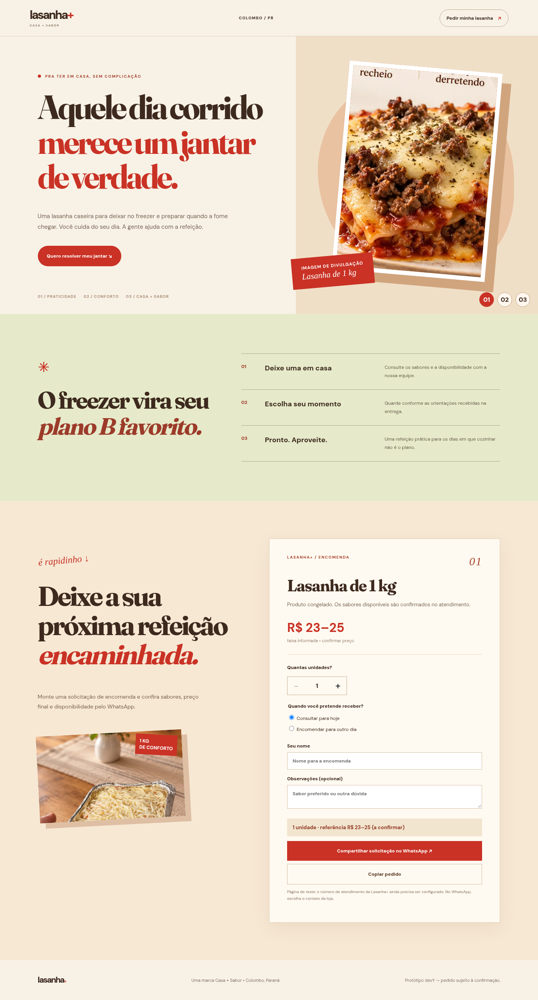
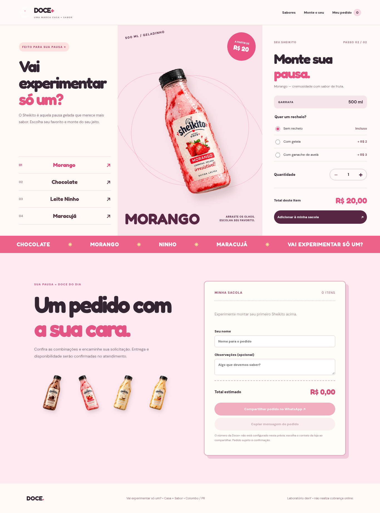
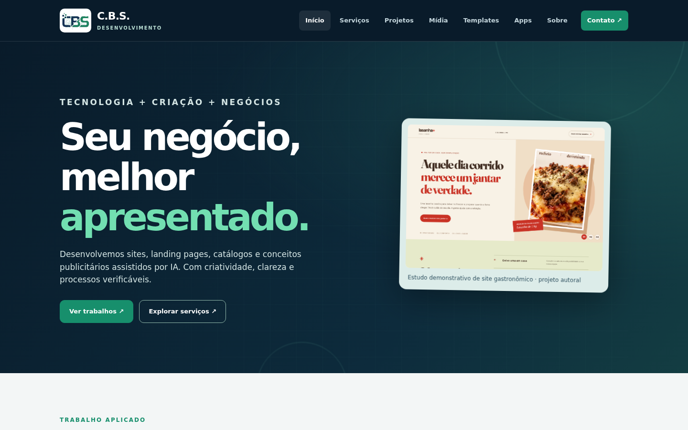

Projetos autorais
Trabalhos para conhecer de perto.
São conceitos e projetos independentes, com fotografias e capturas de protótipos próprios. Recursos comerciais não implementados não são anunciados como disponíveis.
01 / Catálogo digital
Lasanha+
Estudo de catálogo gastronômico com apresentação visual de produtos e navegação pensada para telas pequenas. Projeto demonstrativo.


02 / Catálogo digital
Doce+
Conceito de vitrine para sobremesas com visual orientado a produtos e seleção por categorias. Demonstração autoral, sem loja ativa vinculada.
03 / Sites institucionais
Experiência responsiva
Estudo anterior de apresentação comercial, desenvolvido sob a identidade histórica do estúdio. Captura de projeto próprio; não é trabalho contratado.
